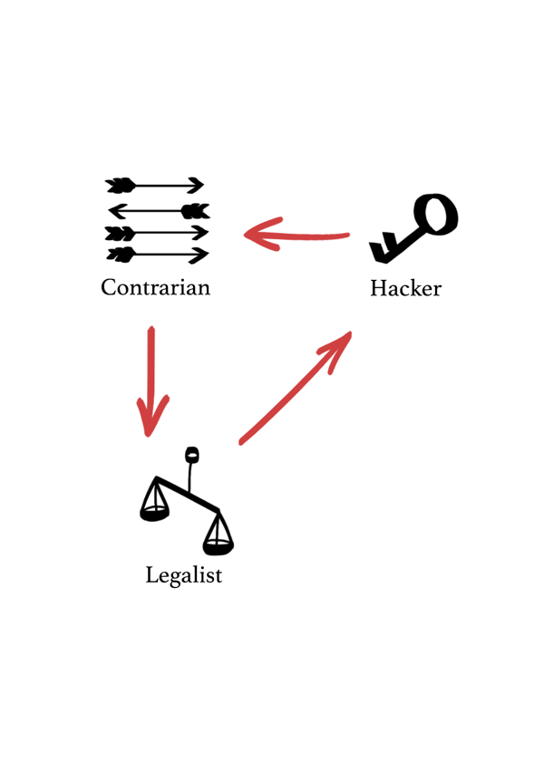
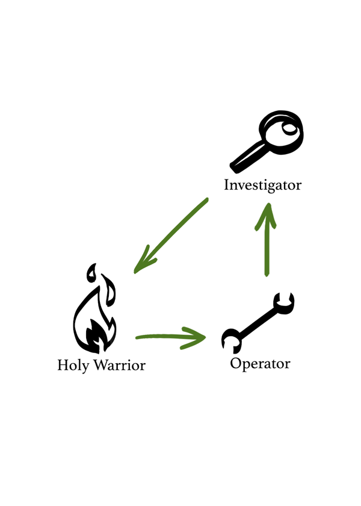

The Theory
Quadrantology is a social physics model for organizational analysis, management problem-solving, and game design. The model began life as an essay on ribbonfarm exploring how individuals "fall off the wagon" when trying to change themselves. This then led to a 2x2 diagram (hence the name) and a personality test designed to unpack how individuals change along with their environments. So far, a couple of hundred people have taken the test, and an online version is under development.

The Model
Quadrantology is a simplified model of organizational creative destruction. It attempts to capture how people and organizations change together, in coupled ways, through the process of responding seemingly intractable problems that pose an existential threat to institutions. Quadrantology models the systemic response as two competing patterns of change, based loosely on Albert. O. Hirschman's classic, Exit, Loyalty, and Voice: A disruption pattern driven by exit motives, and a reform pattern driven by voice motives. The two patterns of change form a yin-yang duality pair. The outcome of the creative-destruction process depends on their relative strengths in a given situation.
These two modeled patterns lead to 6 archetypal roles involved in driving institutional evolution, grouped into two sets of 3 archetypes each: exit archetypes, and voice archetypes.
These archetypes define roles rather than individuals. Individuals will be more or less comfortable in each of the six roles, and may play different roles depending on the context, and the strengths and weaknesses of people around them.
The Exit Cycle
In quadrantology, disruption is modeled as a 3-stage cycle that bootstraps new organizations. The cycle begins with a stuck organization, where a hacker finds an innovative, expedient solution to an intractable problem that involves breaking a rule. A contrarian then emerges to champion a heterodox philosophy for the institution based on legitimizing the hacked solution as the beginning of a whole new way of doing things. Finally, a legalist codifies the heterdox solution into new rules, defining a new organization.
The Voice Cycle
In quadrantology, reformation is modeled as a 3-stage cycle, the mirror image of the disruption/exit cycle, which reforms institutions in trouble. The cycle again begins with a stuck organization, often one facing external disruption. A principled investigator traces the source of a specific intractable problem to systemic corruption and decay. A holy warrior then emerges to champion a return to the "true" values of the institution via a reformation mission. Finally, an operator completes the cycle by driving the reformation through, by reconstructing the organization in accordance to the reformation values.
Using the Model
Individuals can use the quadrantology model to assess their own situational personalities, and pick a side in an evolving institutional landscape.
Analysts can use the quadrantology model for predict winners and losers in ongoing creative destruction.
Organizations can use the model to guide internal reform efforts and external disruption efforts.
We will be gradually adding material and tools to support each of these uses of the model.